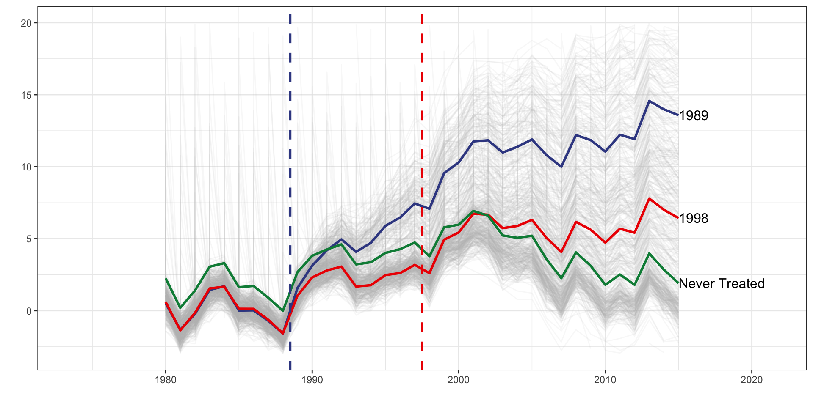
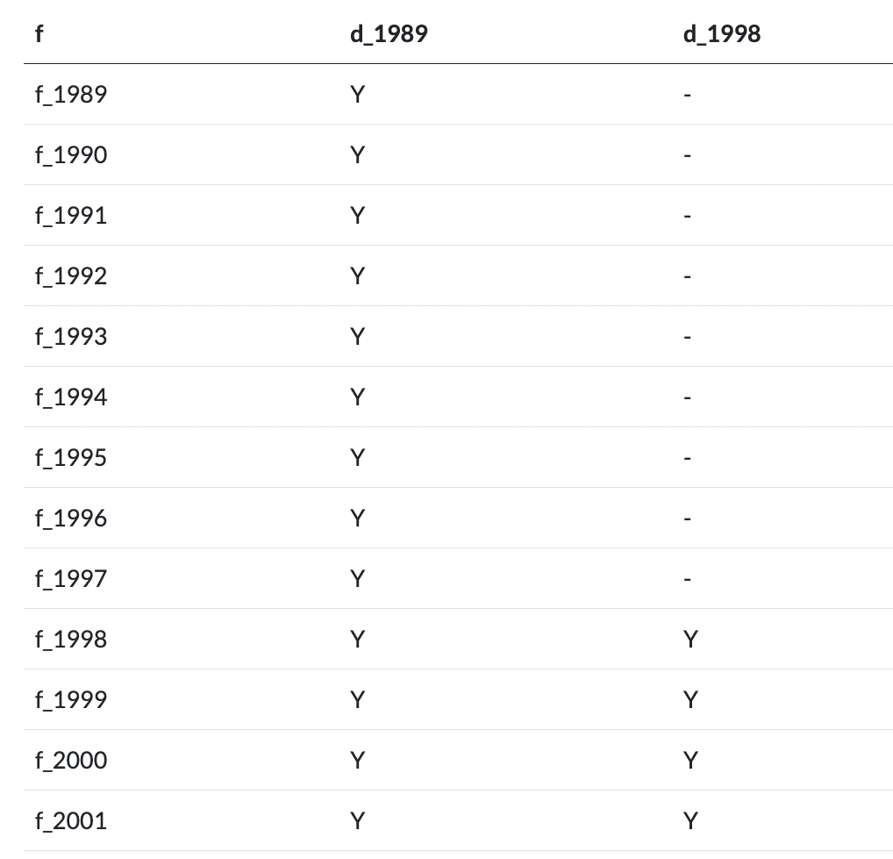

\[ \pi_1 = y_1^{post}(1) - y_1^{post}(0) \]
\[ y_0^{post} (0)-y_0^{pre}(0)=y_1^{post} (0)-y_1^{pre} (0) \]
\[ y_1^{post} (0)=y_0^{post} (0)-y_0^{pre} (0)+y_1^{pre} (0) \]
\[ \pi_1=y_1^{post} (1)-y_0^{post} (0)+y_0^{pre} (0)-y_1^{pre} (0). \]
\[ \pi_1=(y_1^{post}-y_1^{pre} )-(y_0^{post}-y_0^{pre} ) \] where \(y_z^{t}\) is the observed outcome in group \(z\) during period \(t\).
Common Treatment Time, Constant Treatment Effects
| tx_groups | timing | het | tx_effect |
|---|---|---|---|
| Single | Single | No | Constant |
Common Treatment Time, Dynamic Treatment Effects
| tx_groups | timing | het | tx_effect |
|---|---|---|---|
| Single | Single | No | Dynamic |
Multiple Treatment Periods and Constant Equal Treatment Effects
| tx_groups | timing | het | tx_effect |
|---|---|---|---|
| Multiple | Staggered | No | Constant |
Multiple Treatment Periods and Constant Different Treatment Effects, All Groups Eventually Treated
| tx_groups | timing | het | tx_effect |
|---|---|---|---|
| Multiple | Staggered | Yes | Constant |
Multiple Treatment Periods and Constant Different Treatment Effects, Never Treated Group
| tx_groups | timing | het | tx_effect |
|---|---|---|---|
| Multiple | Staggered | Yes | Constant |
Multiple Treatment Periods and Constant Dynamic Treatment Effects
| tx_groups | timing | het | tx_effect |
|---|---|---|---|
| Multiple | Staggered | No | Dynamic |
Multiple Treatment Periods and Heterogeneous Dynamic Treatment Effects
| tx_groups | timing | het | tx_effect |
|---|---|---|---|
| Multiple | Staggered | Yes | Dynamic |
Multiple Treatment Periods and Heterogeneous Dynamic Treatment Effects, Never Treated Group
| tx_groups | timing | het | tx_effect |
|---|---|---|---|
| Multiple | Staggered | Yes | Dynamic |
\[ y_{it} = \tau D_{it} + \delta_i + \gamma_t + \epsilon_{it} \]
\[ y_{it} = \tau D_{it} + \delta_i + \gamma_t + \epsilon_{it} \]
\(D_{it}\) is a binary treatment indicator set to 1 if the individual is in the treated group and the the observation is in the post-treatment period.
\(\delta_i\) and \(\gamma_t\) are unit and time fixed effects, respectively.
Inclusion of unit and time fixed effects flexibly accounts for both unit-specific (but time-invariant) and time-specific (but unit-invariant) unobserved confounders.
\[ y_{it} = \tau D_{it} + \delta_i + \gamma_t + \epsilon_{it} \]
Can think of \(\delta_i = h(\mathbf{U_i})\) and \(\gamma_t = f(\mathbf{V_t})\), where \(\mathbf{U_i}\) are unit specific confounders and \(\mathbf{V_t}\) are time-specific confounders that are common causes of the treatment and the outcome.
\(h(.)\) and \(f(.)\) are arbitrary functions that we do not necessarily know the structure of.
\[ y_{it} = \tau D_{it} + \delta_i + \gamma_t + \epsilon_{it} \]
While the model is assuming there are no interactions between confounders \(\mathbf{U_i}\) and \(\mathbf{V_t}\), there are no functional form restrictions placed on \(h(.)\) and \(f(.)\).
So the model is only making assumptions on the additivity and separability of unobserved confounders.
Source: Imai and Kim
| Treatment Group | Timing | Heterogx | Tx Effect | TWFE |
|---|---|---|---|---|
| Single | Single | No | Constant | Yes |
| Single | Single | No | Dynamic | Yes1 |
| Multiple | Single | No | Constant | Yes |
| Multiple | Single | Yes | Constant | No |
| Multiple | Staggered | No | Constant | No |
| Multiple | Staggered | Yes | Constant | No |
| Multiple | Single | No | Dynamic | No |
| Multiple | Single | Yes | Dynamic | No |
| Multiple | Staggered | No | Dynamic | No |
| Multiple | Staggered | Yes | Dynamic | No |
\(Y_{it} = \delta_i + \gamma_t + \gamma_k^{-K}D_{it}^{<-K} + \sum_{k=-K}^{-2}\gamma_k^{lead}D_{it}^k+\sum_{k=0}^{L}\gamma_k^{lag}D_{it}^k + \gamma_k^{L+}D_{it}^{>L} + \epsilon_{it}\)
\(\delta_i\) and \(\gamma_t\) are unit and time fixed effects, respectively.
We use \(K\) lags and \(L\) leads, and \(D_{i,t}^k\) are event study dummy variables that take a value of one if unit \(i\) is \(k\) periods away from initial treatment time at time \(t\) and zero otherwise.
We may not want to specify every lead and lag available in our data. As such, \(D_{it}^{<-K}\) and \(D_{it}^{>L}\) are Pre and Post variables if the observation is more than \(K\) time periods away in the pre period, and more than \(L\) periods away in the post period.
Also note that the indicator for the time period just before policy adoption, i.e., \(D_{it}^{-1}\) is the excluded category.
| Treatment Group | Timing | Heterogx | Tx Effect | TWFE | TWFE-ES |
|---|---|---|---|---|---|
| Single | Single | No | Constant | Yes | Yes |
| Single | Single | No | Dynamic | Yes1 | Yes |
| Multiple | Single | No | Constant | Yes | Yes |
| Multiple | Single | Yes | Constant | No | No |
| Multiple | Staggered | No | Constant | No | Yes |
| Multiple | Staggered | Yes | Constant | No | No |
| Multiple | Single | No | Dynamic | No | No |
| Multiple | Single | Yes | Dynamic | No | No |
| Multiple | Staggered | No | Dynamic | No | No |
| Multiple | Staggered | Yes | Dynamic | No | No |
Wooldridge,“Two-Way Fixed Effects, the Two-Way Mundlak Regression, and Difference-in-Differences Estimators” (2021 Working Paper)
Multiple Treatment Periods and Heterogeneous Dynamic Treatment Effects, Never Treated Group

DGP code adapted from Baker, Andrew C., David F. Larcker, and Charles CY Wang. “How much should we trust staggered difference-in-differences estimates?.” Journal of Financial Economics 144.2 (2022): 370-395.
| unit | year | y_it | d_it | x_i | x_it |
|---|---|---|---|---|---|
| 1 | 1980 | 0.659 | 0 | 2.666 | -0.416 |
| 1 | 1981 | -1.404 | 0 | 2.666 | 1.125 |
| 1 | 1982 | -0.133 | 0 | 2.666 | 1.001 |
| 1 | 1983 | 1.849 | 0 | 2.666 | -0.575 |
| 1 | 1984 | 1.833 | 0 | 2.666 | 1.606 |
| 1 | 1985 | 0.661 | 0 | 2.666 | 1.565 |
| 1 | 1986 | 0.508 | 0 | 2.666 | 1.546 |
| 1 | 1987 | -0.279 | 0 | 2.666 | 3.861 |
| 1 | 1988 | -2.180 | 0 | 2.666 | 2.276 |
| 1 | 1989 | 0.861 | 1 | 2.666 | 2.653 |
d_1989 is a dummy set to one if the unit belongs to the 1989 treatment cohort.d_1998 is a dummy set to one if the unit belongs to the 1998 treatment cohort.f_* covers year dummy variables from 1989 to 2015d_1989 * f_1989d_1989 * f_1990d_1989 * f_1991d_1998 * f_1998d_1998 * f_1999d_1998 * f_2000
I(d_1989 * f_1989).| Method | Estimation Formula | Fixed or Random Effect |
|---|---|---|
| Two-Way Fixed Effects | feols(I(d* : f*) + factor(time) | unit) |
Unit Fixed Effect |
| Pooled OLS | lm(I(d* : f*) + factor(time) + d*) |
|
| Two-Way Mundlak | lmer(I(d* : f*) + factor(time) + d* + (1|unit) |
Unit Random Effect |
See the course blog for how to demean the covariates so they can be included.
| Method | Estimation Formula | Fixed or Random Effect |
|---|---|---|
| Two-Way Fixed Effects | feols(I(w : d* : f*) + I(w : d* : f* : x_dm_d*) + factor(time) + I(factor(time) * x_dm_d*) | unit) |
Unit Fixed Effect |
| Pooled OLS | lm(I(w : d* : f*) + I(w: d* : f* : x_dm_d*) + factor(time) + I(factor(time) : x_dm_d*) + d* + x + I(d* : x_dm_d*)) |
|
| Two-Way Mundlak | lmer(I(w : d* : f*) + I(w: d* : f* : x_dm_d*) + factor(time) + I(factor(time) : x_dm_d*) + d* + x + I(d* : x_dm_d*) + (1|unit) |
Unit Random Effect |
feols(I(d* : f*) + factor(time) | unit)
| Treatment Group | Timing | Heterogx | Tx Effect | TWFE | TWFE-ES | Ext-DID |
|---|---|---|---|---|---|---|
| Single | Single | No | Constant | Yes | Yes | Yes |
| Single | Single | No | Dynamic | Yes1 | Yes | Yes |
| Multiple | Single | No | Constant | Yes | Yes | Yes |
| Multiple | Single | Yes | Constant | No | No | Yes |
| Multiple | Staggered | No | Constant | No | Yes | Yes |
| Multiple | Staggered | Yes | Constant | No | No | Yes |
| Multiple | Single | No | Dynamic | No | No | Yes |
| Multiple | Single | Yes | Dynamic | No | No | Yes |
| Multiple | Staggered | No | Dynamic | No | No | Yes |
| Multiple | Staggered | Yes | Dynamic | No | No | Yes |